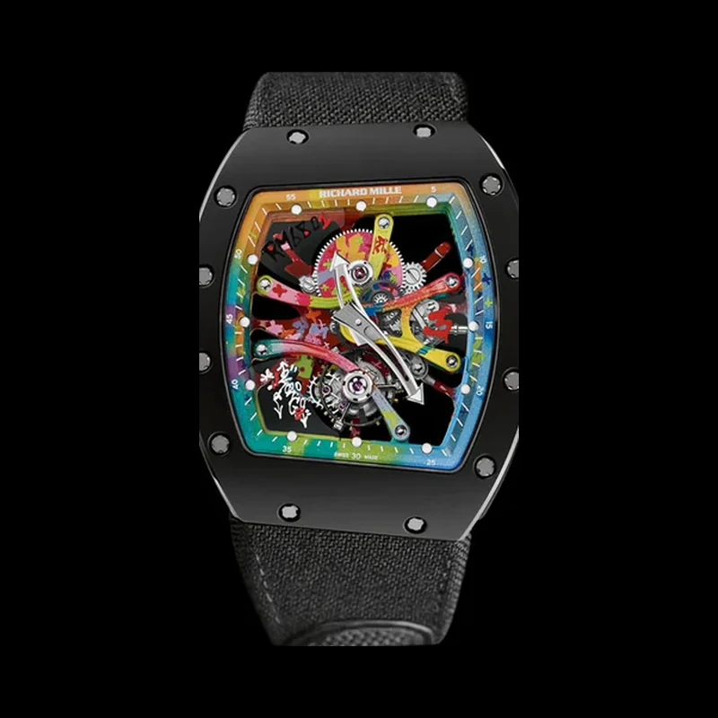

Films
The collection in motion — what the world has filmed of it, gathered in one room.
Featured
As Seen by the World

The collection, filmed by others.
A survey of the collection as watch-spotters and collectors abroad have recorded it — the pieces studied, argued over and followed from a distance. It plays here on the site's own plate, never a borrowed thumbnail.
A Note from the Curator
One Film, Kept Honestly
A museum does not fill its shelves with objects it does not hold. One film is verified and kept here; nothing has been invented to sit beside it. Until footage arrives whose provenance is certain, the collection moves in two other ways — both of them real.